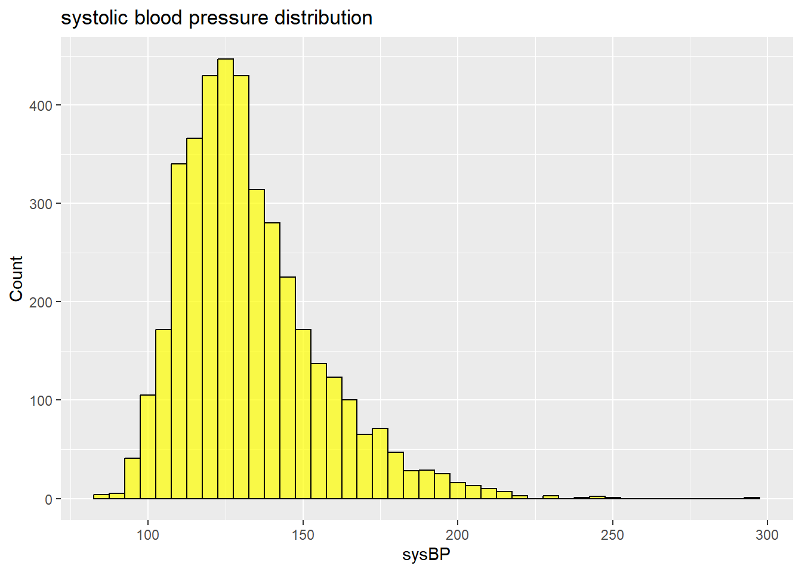

We shall start by loading a few packages that we think we might need for this data.
Warning: package 'here' was built under R version 4.4.2
Warning: package 'tidyverse' was built under R version 4.4.2
Warning: package 'stringr' was built under R version 4.4.2
Warning: package 'haven' was built under R version 4.4.2
Warning: package 'Hmisc' was built under R version 4.4.2
The data used for this annalysis was the Framing heart study and the dataset was gotten from https://www.framinghamheartstudy.org/ .
We shall start by loading the data set and the exploring it to see what it contains.
data<-read_sas("data/fham1.sas7bdat")
lets go through the data set and see what it entails.
dim(data)
[1] 4434 38
The data set contains 4434 observations and 38 variables. For the purpose of this class, we will reduce the data set to have just a few variables that we shall need for this annalysis .
lets check whether our data set has some missing values
pct_complete(diab_data)
[1] 98.49217
gg_miss_var(diab_data)
our output shows that we have missing values for BMI, Total cholestral and glucose. In order to have a clean annalysis, we decided to drop the missing values. Our cut off for dropping the values was that if the values are less that 10%, then we can drop them.
sum(is.na(diab_data$BMI))
[1] 19
sum(is.na(diab_data$TOTCHOL))
[1] 52
sum(is.na(diab_data$GLUCOSE))
[1] 397
diab_data<-diab_data%>%#this will help us drop the na values in the data set.drop_na()
sum(is.na(diab_data)) #checking to see if all the missing values have been dropped.
[1] 0
we went ahead to categorise some other variables.
#we categorised age to see which age is at greater risk of diabetes.diab_data <- diab_data %>%mutate(age_cat=case_when(AGE >=0& AGE <=40~0, AGE >40& AGE <=50~1, AGE >50& AGE <=60~2, AGE >60~3, TRUE~NA, ))# BMI and total cholesterol we will also use to create categories because these will give us clinically relevant ranges.diab_data <- diab_data %>%mutate(collestral_cat=case_when( TOTCHOL <200~"Normal", TOTCHOL >=200& TOTCHOL<240~"Boardline", TOTCHOL>=240~"High", ))diab_data<- diab_data %>%mutate(bmi_cat =case_when( BMI <18.5~"Underweight", BMI >=18.5& BMI <25~"Healthyweight", BMI >=25& BMI <30~"Overweight", BMI>=30~"Obese", ))
Lets make some summary statitics of the data.
# Summary statistics for numerical and categorical variablessummary(diab_data)
SEX AGE BMI TOTCHOL
Min. :1.000 Min. :32.00 Min. :15.54 Min. :113.0
1st Qu.:1.000 1st Qu.:43.00 1st Qu.:23.10 1st Qu.:206.0
Median :2.000 Median :49.00 Median :25.45 Median :234.0
Mean :1.547 Mean :49.98 Mean :25.85 Mean :237.3
3rd Qu.:2.000 3rd Qu.:57.00 3rd Qu.:28.09 3rd Qu.:264.0
Max. :2.000 Max. :70.00 Max. :56.80 Max. :696.0
SYSBP DIABETES GLUCOSE age_cat
Min. : 83.5 Min. :0.00000 Min. : 40.00 Min. :0.000
1st Qu.:117.5 1st Qu.:0.00000 1st Qu.: 72.00 1st Qu.:1.000
Median :129.0 Median :0.00000 Median : 78.00 Median :1.000
Mean :133.0 Mean :0.02866 Mean : 82.14 Mean :1.445
3rd Qu.:144.0 3rd Qu.:0.00000 3rd Qu.: 87.00 3rd Qu.:2.000
Max. :295.0 Max. :1.00000 Max. :394.00 Max. :3.000
collestral_cat bmi_cat
Length:4013 Length:4013
Class :character Class :character
Mode :character Mode :character
Checking out the descriptive summary statistics
#checking the distribution statistics of the variables in the data set describe(diab_data, stats =c("mean", "sd", "min", "max", "median", "iqr"))
diab_data
10 Variables 4013 Observations
--------------------------------------------------------------------------------
SEX Format:BEST
n missing distinct Info Mean
4013 0 2 0.743 1.547
Value 1 2
Frequency 1817 2196
Proportion 0.453 0.547
--------------------------------------------------------------------------------
AGE : Age (years) at examination Format:BEST
n missing distinct Info Mean pMedian Gmd .05
4013 0 39 0.999 49.98 50 9.989 37
.10 .25 .50 .75 .90 .95
39 43 49 57 62 64
lowest : 32 33 34 35 36, highest: 66 67 68 69 70
--------------------------------------------------------------------------------
BMI : Body Mass Index (kg/(M*M) Format:BEST
n missing distinct Info Mean pMedian Gmd .05
4013 0 1342 1 25.85 25.6 4.433 20.08
.10 .25 .50 .75 .90 .95
21.10 23.10 25.45 28.09 30.77 32.81
lowest : 15.54 15.96 16.48 16.59 16.69, highest: 44.55 44.71 45.8 51.28 56.8
--------------------------------------------------------------------------------
TOTCHOL : Serum Cholesterol mg/dL Format:BEST
n missing distinct Info Mean pMedian Gmd .05
4013 0 246 1 237.3 235.5 49.34 170
.10 .25 .50 .75 .90 .95
184 206 234 264 293 313
lowest : 113 119 124 133 135, highest: 439 453 464 600 696
--------------------------------------------------------------------------------
SYSBP : Systolic BP mmHg Format:BEST
n missing distinct Info Mean pMedian Gmd .05
4013 0 235 1 133 130.8 24.26 105.0
.10 .25 .50 .75 .90 .95
109.0 117.5 129.0 144.0 163.5 176.7
lowest : 83.5 85 85.5 90 92 , highest: 242 243 244 248 295
--------------------------------------------------------------------------------
DIABETES : Diabetic Y/N Format:BEST
n missing distinct Info Sum Mean
4013 0 2 0.084 115 0.02866
--------------------------------------------------------------------------------
GLUCOSE : Casual Glucose mg/dL Format:BEST
n missing distinct Info Mean pMedian Gmd .05
4013 0 147 0.999 82.14 79 18.4 62
.10 .25 .50 .75 .90 .95
65 72 78 87 98 109
lowest : 40 43 44 45 46, highest: 366 368 370 386 394
--------------------------------------------------------------------------------
age_cat
n missing distinct Info Mean pMedian Gmd
4013 0 4 0.911 1.445 1.5 1.034
Value 0 1 2 3
Frequency 676 1483 1248 606
Proportion 0.168 0.370 0.311 0.151
For the frequency table, variable is rounded to the nearest 0
--------------------------------------------------------------------------------
collestral_cat
n missing distinct
4013 0 3
Value Boardline High Normal
Frequency 1406 1817 790
Proportion 0.350 0.453 0.197
--------------------------------------------------------------------------------
bmi_cat
n missing distinct
4013 0 4
Value Healthyweight Obese Overweight Underweight
Frequency 1756 518 1689 50
Proportion 0.438 0.129 0.421 0.012
--------------------------------------------------------------------------------
table(diab_data$SEX)
1 2
1817 2196
prop.table(table(diab_data$SEX))
1 2
0.4527785 0.5472215
prop.table(table(diab_data$DIABETES))
0 1
0.97134313 0.02865687
This description shows us how many individuals belong to each category. There are 1817 males and 2196 females. Out of the 4434 individuals, 45.3% are male and 54.7% are female. The distributions and percentage proportions of the variables are shown in the table.
Lets make some visualisations for the data that we have and also explore some some relationships between some variables
ggplot(diab_data, aes(x = GLUCOSE, y = BMI, color =as.factor(DIABETES))) +geom_point(alpha =0.7) +labs(title ="Scatter plot of Glucose vs BMI", x ="Glucose", y ="BMI") +theme_minimal()
Relationships.
ggplot(diab_data, aes(x =as.factor(DIABETES), y = GLUCOSE, fill =as.factor(SEX))) +geom_boxplot() +labs(title ="Glucose Levels by Diabetes Outcome", x ="Diabetes (0 = No, 1 = Yes)", y ="Glucose")
We can also visualize the distributions of continuous variables.
# Histogram of total cholestralggplot(diab_data, aes(x = TOTCHOL)) +geom_histogram(binwidth =5, fill ="blue", color ="black", alpha =0.7) +labs(title ="chloestral level Distribution", x ="Cholestral levels", y ="Count")
# Histogram of systolic blood pressureggplot(diab_data, aes(x = SYSBP)) +geom_histogram(binwidth =5, fill ="yellow", color ="black", alpha =0.7) +labs(title ="systolic blood pressure distribution", x ="sysBP", y ="Count")

# Density plot for BMIggplot(diab_data, aes(x = BMI)) +geom_density(fill ="red", alpha =0.5) +labs(title ="BMI Density Plot", x ="BMI", y ="Density")
From the above curves, we see that BMI, total cholestral and systolic blood pressure are normally distributed.